微应用申请
简介：微应用申请指的是平台微应用资源的申请及支付过程
(一)有固定申请次数的情况
1.点击详细页面服务申请功能
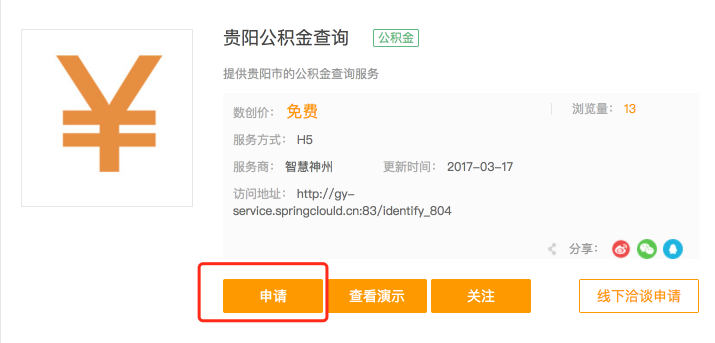2.收费套餐：选择套餐、输入申请套餐数，接受服务协议
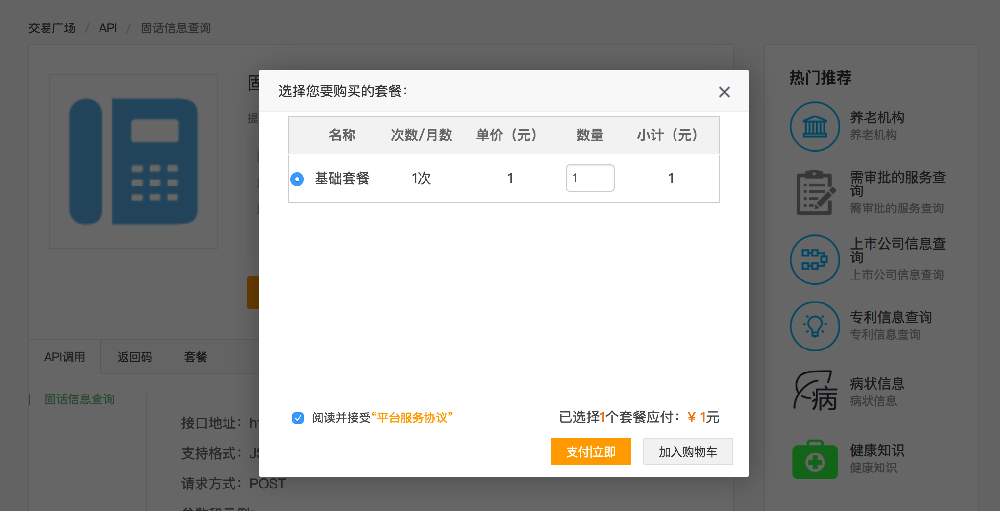3.免费套餐：接受服务协议
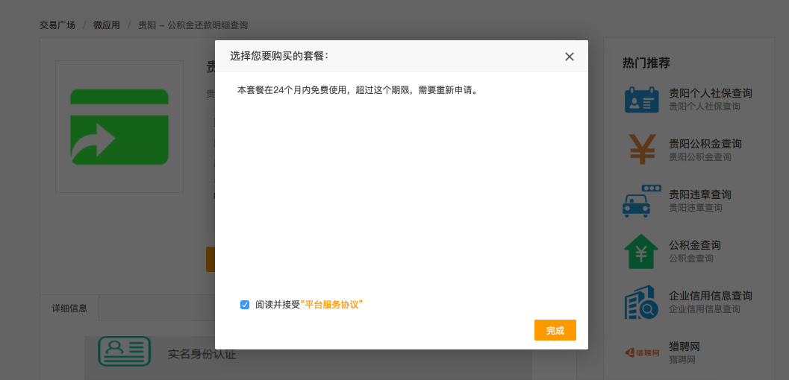4.收费套餐：如果只有一项资源可以点击立即支付完成申请
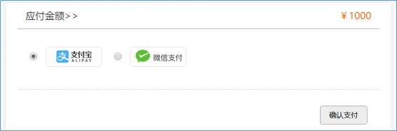5.收费套餐：如果支付过程中出现异常或者报错，用户可以在用户中心购物车中继续完成支付
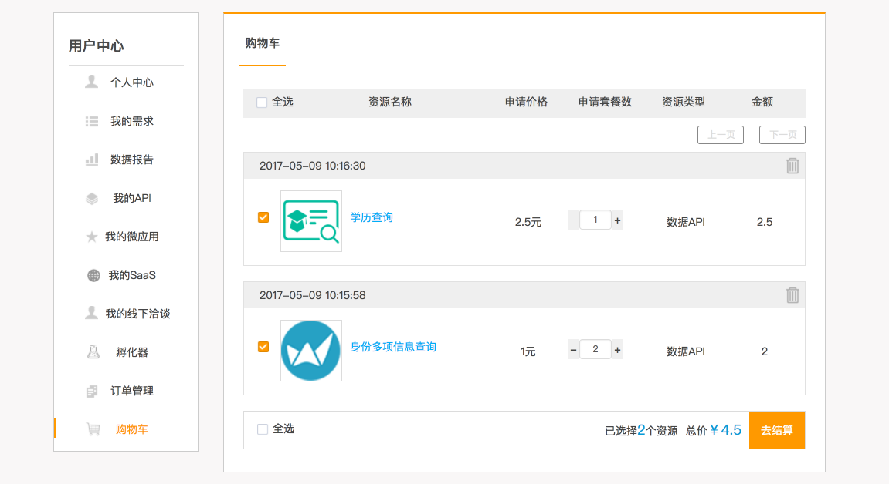6.收费套餐：如果要选择多项资源可以加入购物车后统一支付完成申请

(二)没有固定申请次数的情况
如果想对某项资源进行深度合作，可以点击线下洽谈申请，会有工作人员第一时间和您取得联系
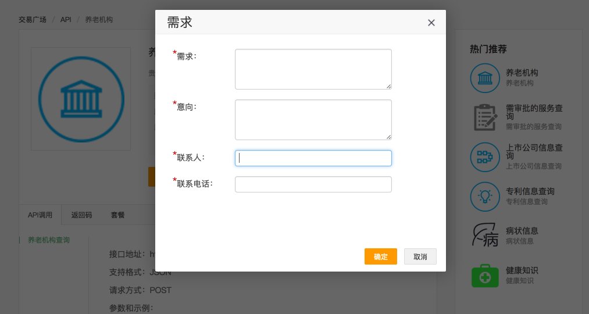微应用发布规范
(一) 微应用H5样式规范
1.界面规范
微应用界面应体现H5界面风格，功能简约、颜色单一。如下示例：
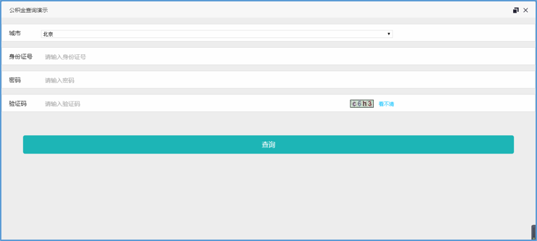上图分辨率:1366*608
2.适应性规范
微应用主要功能，如输入框、检索框、功能按钮等应可以随浏览器宽度自动适应。如下示例：
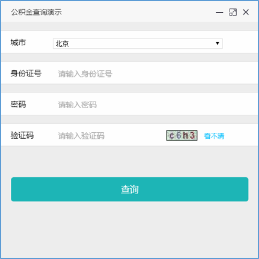上图分辨率：495*495
3.颜色规范
背景颜色易采用灰色背景“ededed”
功能按钮颜色易采用绿色“1db5b6”
(二) 微应用发布功能
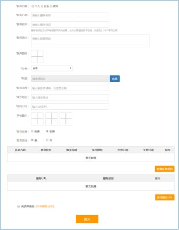上图为平台发布微应用功能界面，以下为部分字段解释
1.服务对象
>个人主要为天气预报查询等生活类应用
>企业主要为工商信息查询等企业经营类应用
>政府主要为精准招商等政务服务类应用
2.服务标识
微应用的英文展现标识，用于形成微应用平台地址
3.服务图标
用于展现门户的服务图标，贵阳数创易平台此服务图标像素要求为250*200
4.演示地址
用于展现微应用的界面演示，一般采用静态页面的形式展现测试数据及页面交互，开发者需要自行开发并部署形成演示地址
5.访问URL
微应用的主程序地址，用于体现主要功能，接入方将通过映射的方式获取此地址界面
6.是否收费
发布者通过此功能设定微应用收费规则
7.服务URL
此地址为收费功能监控地址，即收费功能地址。一项微应用可能有多项功能，比如查询图片验证码、发送短信等。只有配置此服务URL的功能，平台才会进行收费监控，进行计费
8.是否落地
发布者需要判断是否可以将接入方的调用数据及结果进行返回用于接入方数据落地，如果不可以要选择“否”，可以选择“是”
微应用接入流程
(一)接入步骤:
1.在页面申请微应用使用（参见申请流程）
2.微应用接入时，在用户后端携带密钥、微应用标识、用户信息（可选）请求微应用入口地址和鉴权 ticket
3.用户后台得到微应用地址和鉴权 ticket ，使用微应用地址和鉴权 ticket 组合做302跳转，进入微应用展示页面。
4.接入流程图如下
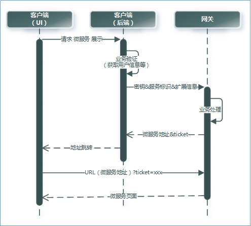(二)调用请求参数说明:
微应用访问地址可以是以下两种类型：
1>请求参数全在url后面
http://service.areacode.com:48011/phone/getPhoneNo?ticket=dd2bd51337454156ba8a300ec350070d&userId=xuchaoj&user-data=201701091111111&authorization=dc:234567:MGEzMmJkNTk0NzkxMjM5YjJiNGM0OTk1ODY1ZmY4Mzg1ZmYxNjdhNw==2>请求参数都放在头header里,除了ticket
http://service.areacode.com:48011/phone/getPhoneNo?ticket=dd2bd51337454156ba8a300ec350070d其中，header里需放入以下字段:
userId="xuchaoj"
user-data="201701091111111"
authorization="dc:234567:MGEzMmJkNTk0NzkxMjM5YjJiNGM0OTk1ODY1ZmY4Mzg1ZmYxNjdhNw=="
user-param="放在url后面的业务参数"(如param1=a¶m2=b)【可选】
(三) 微应用生成ticket接口说明
| 访问地址 | 生产环境：/getTicket | ||||
| 集成环境：http://mscx-gateway.springclould.cn:58080/gateway-web-1.8.0/getTicket | |||||
| 请求方式 | POST | ||||
| 服务编码 | |||||
| 参数说明 | 序号 | 参数 | 数据类型 | 是否必填 | 参数说明 |
| 输入参数 | 1 | serviceUrl | String | Y | 微应用context |
| 2 | userId | String | Y | 用户标识 | |
| 输出参数 | 返回Response，详见下方“输出参数Response值说明” | ||||
| 备注 |
请求报文报文： {
"data" : [
{
"serviceUrl" : "/phone/getPhoneNo",
"userId":"000001000002330"
}
]
}
响应报文： 成功: http://微应用域名/serviceUrl?ticket=b2aff98b3c1b496cbad42b3a8d9a2b5b 失败: http://404notfound |
||||
|
返回值公共参数说明 |
|||||
|
序号 |
参数 |
参数说明 |
|||
|
1 |
|||||
|
2 |
|||||
|
3 |
|||||
|
4 |
|||||
|
返回码、返回信息说明 |
|||||
|
序号 |
返回码(code) |
返回信息(message) |
|||
|
1 |
|||||
|
2 |
|||||
|
3 |
|||||
(四) 微应用回调
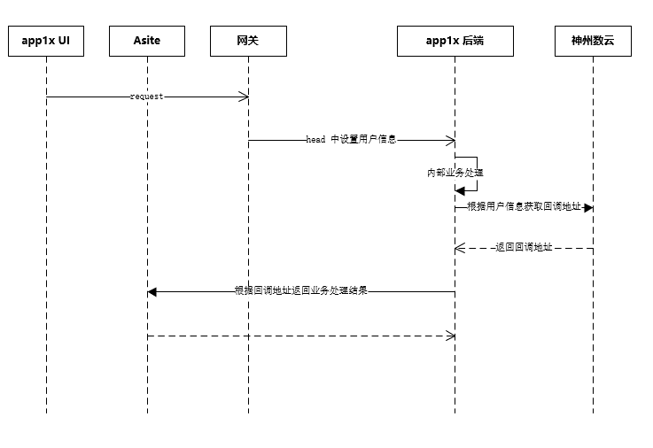微服务：根据返回的回调地址，进行业务处理结果的发送。
需要规范，回调的传送报文格式（在回调描述中描述，MK格式）
需要规范，回调之后的请求规范（在回调描述中描述，MK格式）
网关地址：http://gy-service.springcloud.cn:83/